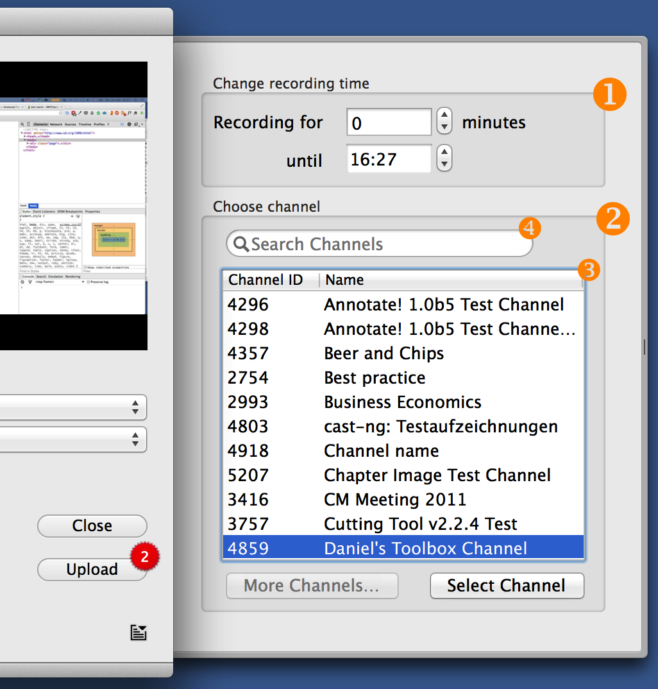

Settings Drawer
In the setting drawer you can configure and define the values of the current recording.
The drawer can be opened by clicking on the 'Change' button in the recorder interface.
The drawer is divided into two parts.
① Setting recording time
You can define the duration of a recording before and even during a recording.
In the upper field, you can enter a value defining the complete duration of the recording. Please note that this value is in minutes.
Caution: If adjusting the duration during a recording, the minutes specified do not represent the complete recording. Instead they represent the remaining time of recording.
② Choosing upload channel
In the channel list ③, you choose in which channel you want your clip to be added.
If you have many channels, you can search within them using the search field ④.
If you see no channels listed or you are missing one, you can click on the "More Channels..." button. A popup window will open and ask you to sign in using SWITCHaai. Once you have successfully logged in, you will see the channel list getting populated with your channels.